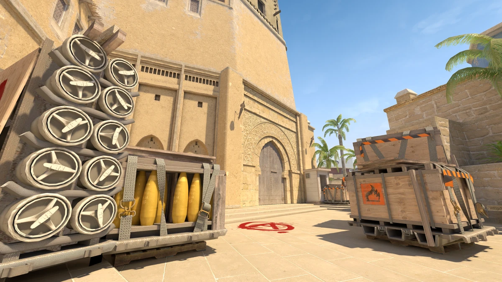
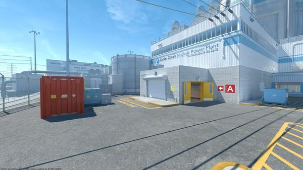

Mapa Destacado: Dust II
Es el mapa mas jugado del juego historicamente, ya que se juega desde su primer version la 1.6

Counter-Strike es el shooter táctico en primera persona definitivo, basado en enfrentamientos de 5 contra 5. La premisa es simple pero altamente competitiva: un equipo de Terroristas intenta plantar una bomba o retener rehenes, mientras que los Antiterroristas deben impedirlo o rescatarlos.
Se destaca por su sistema económico, donde los jugadores compran armas y equipo según su desempeño, y por exigir una mezcla perfecta de puntería precisa, estrategia en equipo y conocimiento táctico de los mapas. Es, desde hace décadas, el referente máximo de los eSports a nivel mundial.
Es el mapa mas jugado del juego historicamente, ya que se juega desde su primer version la 1.6
Este es el segundo mapa mas jugado, tambien existe desde su version en 1.6

Nuke es otro mapa de los considerados clasicos dentro del juego, como los anteriores tambien se encuentra desde su version 1.6
